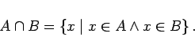

Inhalt Index DeskTop Bronstein

 Algebra und Diskrete Mathematik Mengenlehre Operationen mit Mengen
Algebra und Diskrete Mathematik Mengenlehre Operationen mit Mengen


Durch Mengenoperationen werden aus gegebenen Mengen auf verschiedene Weise neue Mengen gebildet.
| (5.38) |
Man liest ,,A vereinigt mit B``.
Sind A und B durch die Eigenschaften E1 bzw. E2 beschrieben, dann enthält die Vereinigungsmenge  die Elemente, die wenigstens eine der beiden Eigenschaften besitzen, also wenigstens zu einer der beiden Mengen gehören.
die Elemente, die wenigstens eine der beiden Eigenschaften besitzen, also wenigstens zu einer der beiden Mengen gehören.
In der linken Abbildung ist die Vereigungsmenge durch das schattiert gezeichnete Gebiet dargestellt.
| Beispiel |
|
|
|  | (5.39) |
Man liest ,,A geschnitten mit B``.
Sind A und B durch die Eigenschaften E1 bzw. E2 beschrieben, dann enthält die Elemente, die beide Eigenschaften E1 und E2 besitzen.
In der mittleren Abbildung ist die Schnittmenge schattiert dargestellt.
| Beispiel |
|
Mit Hilfe des Durchschnitts der Teilermengen T(a) und T(b) zweier Zahlen a und b läßt sich der größte gemeinsame Teiler (ggT) bestimmen. |
Disjunkte Mengen: Zwei beliebige Mengen A und  die kein gemeinsames Element besitzen, nennt man elementfremd oder disjunkt; für sie gilt
die kein gemeinsames Element besitzen, nennt man elementfremd oder disjunkt; für sie gilt
| (5.40) |
d.h., ihr Durchschnitt ist eine leere Menge.
| Beispiel |
|
Der Durchschnitt der Menge der ungeraden und der Menge der geraden Zahlen ist leer, d.h. |
| (5.41) |
Man liest ,,Komplement von A bezüglich M``.
Ist die Grundmenge M aus dem Zusammenhang heraus offenbar, wird für die Bezeichnung der Komplementärmenge auch das Symbol  verwendet. In der rechten Abbildung ist das Komplement
verwendet. In der rechten Abbildung ist das Komplement  schattiert dargestellt.
schattiert dargestellt.